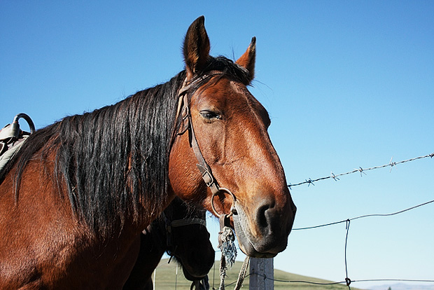
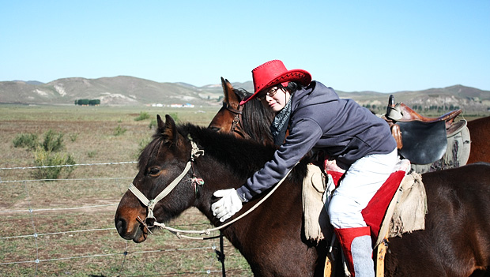

中秋去了丰宁坝上草原，主要娱乐是骑马。

我骑的那匹叫“贺老四”，一叫“贺老四”，它就屁颠屁颠地开始跑。不过我叫没用，得带队的向导叫。贺老四太胖了，长得跟牛似的，肚子屁股都大。向导说它平日是干活的马。胖的马自然跑不快，一路只能是小跑。马小跑非常要命，因为不大好找节奏，我在上面被他颠来颠去的，第二天尾龙骨就痛得很。一路上四个小时“贺老四”还算老实，没给我整出啥事来。只是一次在我转身整理包的时候，这小子跑树底下过，它自己迅速从树下钻过去，我一转身，迎面来的树枝就抽出我脸上一道疤。顿时我觉得眼前模糊，原来眼镜掉了。心想完了，肯定掉后面了，可“贺老四”还在往前跑。我蒙眼低头看了看，那眼镜竟然挂在“贺老四”长长的鬓毛上，我赶紧抓起来戴上，也算不幸中的大幸。只怪“贺老四”只顾自己身高，没想到它上面还驼着一个人呢。 回程的时候，有人问向导“贺老四”算不算好马？向导说：“当然是好马，宰了吃比别人多几十斤呢”

上面这匹小一些的马是“贺老四”的兄弟，喜欢一边跑一边放屁。